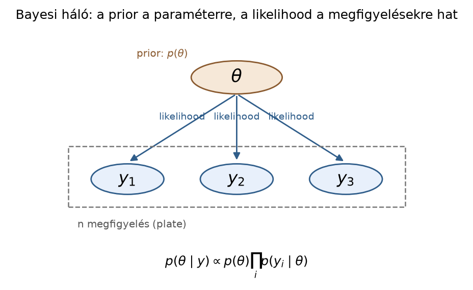

Belépő · [BŐVÍTŐ MODUL] · szint: haladó · idő: 90 perc · eszköz: PyMC, ArviZ
Előfeltétel: 18.4. alfejezet · Célkészség: Bayesi frissítés rácson · Kimenet: projektartefaktum és ellenőrzött futtatási jegyzőkönyv.
A Northstar kísérleti projekt mintájára egy szintetikus
Bernoulli-kimenetet elemzünk: a kezelési ág egy kis kohorszában a 7
napos konverzió (conversion_7d) értéke 0 vagy 1. A
megfigyelési egység ügyfél, az adat-összegzés egyetlen eseménysorozatot
ad:
Itt a konverziók száma, a kezelt ügyfelek száma. A kérdéses paraméter : a kezelési ág konverziós valószínűsége, dimenzió nélküli valószínűség. A cél a feletti normalizált posterior-sűrűség kiszámítása rácsos közelítéssel, két eltérő priorral. Előzetes becslés a 15.1. alfejezet maximum likelihood gondolatából: a mintaarány , tehát a posterior módusz körül várható; flat priorral a posterior várható érték -nél kissé nagyobb lesz, mert a balra korlátos tartomány aszimmetriája felfelé húz.
Az alábbi kódok futtathatók, de az itt közölt numerikus kimenetek elméletileg várt, szemléltető értékek; e szöveg írásakor nem futott Python-kód. A tanuló saját futtatása az ellenőrzés.
Prior (a priori eloszlás). A prior a paraméter feletti bizonytalanságunkat fejezi ki az adat megtekintése előtt. Sűrűség: , . Két példát használunk:
A Beta prior alakja:
Itt a prior „mintanagyság-ereje”: nagyobb összeg szűkebb, határozottabb priort jelent.
Likelihood. A Bernoulli-mintához tartozó likelihood a függvénye, ahol az adat rögzített:
A teljes binomiális valószínűség ennek -szorosa. A tényező -től független konstans, ezért a posterior normalizálásánál kiesik; elég a likelihood-magot, -t használni. A likelihood nem valószínűségi eloszlás felett: integrálja általában nem 1. Az , adatnál a kernel -nél körülbelül , -nél ; a hányados , tehát az adat önmagában a -et jobban támogatja, mint a -et.
Posterior (a posteriori eloszlás). Bayes tétele alapján a posterior-sűrűség arányos a prior és a likelihood szorzatával:
A normalizáló konstans, más néven marginális likelihood / evidence. Az itt használt kernel esetén a kernel-evidence; a teljes binomiális evidenciához a tényezőt is meg kell szorozni.
Normalizálás (normalization). A folytonos integrált egy pontból álló, és közötti egyenletes rácson közelítjük:
Minden rácspontban kiszámítjuk az unnormalizált posterior értéket:
A normalizáló konstans trapézszabállyal közelítve:
A normalizált posterior:
Ekkor . A normalizálás nélkül görbe formája azonos, de a magasság nem sűrűség, és a posterior várható érték vagy intervallum hibásan súlyozott értéket adna.
Predictive (posterior prediktív eloszlás). Egy új, a mintától független kezelt ügyfél sikerének valószínűsége, feltéve a modellt és a múlt adatot:
Rácson ez a posterior várható értéke:
trapezoid(grid * posterior, grid). A prediktív valószínűség
tehát nem a
kimenet, hanem a siker valószínűségének posterior-átlaga. Ez a mennyiség
a paraméterbizonytalanságot átlagolja ki, nem az egyedi
zaját adja meg; utóbbihoz a teljes posterior prediktív eloszlás
tartozik.
A posterior credible interval (bayesi hitelességi intervallum) adott és prior mellett a posterior tömeg 95%-át tartalmazza. Ez más értelmezés, mint a 15.2. alfejezetbeli konfidenciaintervallum ismételt mintavételi lefedettségi állítása.

Az ábra a Bayesi frissítés gráfszerkezetét mutatja: a
csomópont a közös paraméter, a
csomópontok a megfigyelések, a szaggatott keret pedig azt jelzi, hogy a
megfigyelések azonos likelihood-modellt használnak. A nyilak iránya a
generatív feltételezést jelöli
(
befolyásolja a
-t),
nem oksági bizonyítékot. Az ábra nélkül is ugyanez a mondat áll:
.
A teljes generátor: lab/figures/make_concept_figures.py
bayes_network(); a reprodukálható mag:
import matplotlib.pyplot as plt
from matplotlib.patches import Ellipse, FancyArrowPatch, Rectangle
fig, ax = plt.subplots(figsize=(6.4, 3.6))
ax.set_xlim(0, 1); ax.set_ylim(0, 1); ax.axis("off")
ax.add_patch(Ellipse((0.5, 0.8), 0.2, 0.13, facecolor="#f6e8d8"))
ax.text(0.5, 0.8, r"$\theta$", ha="center", va="center", fontsize=14)
for x in (0.26, 0.5, 0.74):
ax.add_patch(Ellipse((x, 0.4), 0.16, 0.12, facecolor="#e8f0fb"))
ax.text(x, 0.4, r"$y_i$", ha="center", va="center")
ax.add_patch(FancyArrowPatch((0.5, 0.735), (x, 0.465),
arrowstyle="-|>", mutation_scale=11, color="#2f5d8a"))
ax.add_patch(Rectangle((0.13, 0.29), 0.74, 0.24, fill=False, linestyle="--"))
ax.text(0.15, 0.23, "n megfigyelés (plate)")
plt.show()A kód Python 3.12-t, NumPy-t és SciPy-t igényel; a lab
projektgyökeréből uv sync után
uv run python s073_grid_bayes.py módon futtatható. Ha már
van lock, használjon uv run --locked-ot. A kód egyszerre
számítja a két priort és a minta növelésének hatását.
import numpy as np
from scipy.integrate import trapezoid
grid = np.linspace(0.0, 1.0, 1001)
step = grid[1] - grid[0]
def kernel(p_grid, k, n):
return p_grid**k * (1.0 - p_grid)**(n - k)
def posterior_on_grid(prior, k, n):
unnorm = prior * kernel(grid, k, n)
z = trapezoid(unnorm, grid)
return unnorm / z
def posterior_mean(post):
return trapezoid(grid * post, grid)
def equal_tail_interval(post, alpha=0.05):
# Trapézonkénti területekből CDF, majd lineáris kvantiliskeresés.
areas = 0.5 * (post[:-1] + post[1:]) * np.diff(grid)
cdf = np.concatenate(([0.0], np.cumsum(areas)))
cdf[-1] = 1.0
lo = np.interp(alpha / 2, cdf, grid)
hi = np.interp(1.0 - alpha / 2, cdf, grid)
return lo, hi
flat_prior = np.ones_like(grid)
skeptical_prior = 4.0 * (1.0 - grid)**3 # Beta(1,4), normált sűrűség
for name, prior in [("flat", flat_prior), ("skeptical Beta(1,4)", skeptical_prior)]:
post = posterior_on_grid(prior, 6, 15)
print(name,
"mean=%.6f" % posterior_mean(post),
"95% CI=", tuple(round(v, 4) for v in equal_tail_interval(post)),
"normalization_error=%.1e" % (trapezoid(post, grid) - 1.0))
print("\nA minta növelése, rögzített k/n = 0.4 aránnyal:")
for k, n in [(6, 15), (24, 60), (240, 600)]:
mean_flat = posterior_mean(posterior_on_grid(flat_prior, k, n))
mean_skep = posterior_mean(posterior_on_grid(skeptical_prior, k, n))
print(f"n={n:4d} k={k:3d} flat_mean={mean_flat:.4f} skeptical_mean={mean_skep:.4f}")
# A posterior görbék ábrája, ha vizuális ellenőrzés is kell:
import matplotlib.pyplot as plt
fig, ax = plt.subplots(figsize=(7, 4))
for name, prior in [("flat", flat_prior), ("skeptical Beta(1,4)", skeptical_prior)]:
post = posterior_on_grid(prior, 6, 15)
ax.plot(grid, post, label=name)
ax.set_xlabel("p: konverziós valószínűség")
ax.set_ylabel("Posterior-sűrűség")
ax.set_title("n=15, k=6: két prior posteriorja")
ax.legend()
plt.tight_layout()
plt.show()A kód kimenete analitikusan ellenőrizhető:
A posterior várható értékek:
| prior | posterior | várható érték |
|---|---|---|
| flat Beta | Beta | |
| szkeptikus Beta | Beta |
A flat prior posterior módusza , pontosan a mintaarány. A szkeptikus prior módusza ; a prior a felől húzza felfelé az adat -ét.
A minta növelése rögzített arány mellett:
| n | k | flat posterior várható értéke | szkeptikus posterior várható értéke |
|---|---|---|---|
| 15 | 6 | ||
| 60 | 24 | ||
| 600 | 240 |
A két prior közötti különbség -nél , -nál már csak körüli; a minta növekedésével a prior hatása eltűnik, de a priorválasztás továbbra is explicit marad.
A pontos rács és a trapézszabály közelítés: a hibát nem elég megsejteni, meg kell mérni. Két kontroll kell: (1) a posterior összefoglalója stabil-e finomításra, és (2) a likelihood kiszámítása nem csordul-e alá nagy minta esetén. A naiv szorzat ugyanis , mellett minden rácsponton -ra csökken, így , és a posterior miatt NaN lesz. A log-likelihood plusz maximum-eltolás (logsumexp-minta) megőrzi a relatív súlyokat.
import numpy as np
from numpy import trapezoid
def make_grid(size):
return np.linspace(0.0, 1.0, size)
def log_kernel(grid, k, n):
logp = np.full_like(grid, -np.inf)
logq = np.full_like(grid, -np.inf)
inner = (grid > 0.0) & (grid < 1.0)
logp[inner] = np.log(grid[inner])
logq[inner] = np.log1p(-grid[inner])
if k == 0:
logp[grid == 0.0] = 0.0
if n - k == 0:
logq[grid == 1.0] = 0.0
return k * logp + (n - k) * logq
def posterior(prior, k, n, size):
grid = make_grid(size)
with np.errstate(divide="ignore"):
log_unnorm = np.log(prior(grid)) + log_kernel(grid, k, n)
log_unnorm = log_unnorm - log_unnorm.max() # logsumexp-eltolás
unnorm = np.exp(log_unnorm)
return grid, unnorm / trapezoid(unnorm, grid)
def summary(post, grid, alpha=0.05):
areas = 0.5 * (post[:-1] + post[1:]) * np.diff(grid)
cdf = np.concatenate(([0.0], np.cumsum(areas)))
cdf = cdf / cdf[-1]
mean = trapezoid(grid * post, grid) / trapezoid(post, grid)
return mean, np.interp(alpha / 2, cdf, grid), np.interp(1 - alpha / 2, cdf, grid)
flat = lambda grid: np.ones_like(grid)
skeptical = lambda grid: 4.0 * (1.0 - grid) ** 3
for name, prior in [("flat", flat), ("Beta(1,4)", skeptical)]:
for size in (11, 101, 1001, 10001):
grid, post = posterior(prior, 6, 15, size)
mean, lo, hi = summary(post, grid)
print(f"{name:8s} G={size:5d} mean={mean:.9f} CI=[{lo:.6f}, {hi:.6f}]")
grid = make_grid(1001)
raw = grid ** 700 * (1 - grid) ** 1300
print("nulla rácspont:", int((raw == 0).sum()), "Z =", trapezoid(raw, grid))
grid, post = posterior(flat, 700, 2000, 1001)
print("log-skála:", summary(post, grid), "integrál:", trapezoid(post, grid))
grid, post = posterior(flat, 6, 15, 1001)
mass = post / post.sum()
print("sűrűség:", trapezoid(post, grid), "tömeg összege:", mass.sum(),
"tömeg trapézzel:", trapezoid(mass, grid))A rácsfinomítás eredménye , mellett:
| flat mean | flat 95% CI | Beta mean | Beta 95% CI | |
|---|---|---|---|---|
| 11 | 0.411776407 | [0.165233, 0.674850] | 0.350043618 | [0.124249, 0.588963] |
| 101 | 0.411764706 | [0.197184, 0.645983] | 0.350000000 | [0.162484, 0.565851] |
| 1001 | 0.411764706 | [0.197530, 0.645657] | 0.350000000 | [0.162883, 0.565505] |
| 10001 | 0.411764706 | [0.197534, 0.645654] | 0.350000000 | [0.162886, 0.565502] |
A durva rács a flat posterior 95%-os intervallumának bal végét -ről -re tolja (0.032 hiba), a jobb végét pedig -ről -re; a várható érték ezzel szemben alig mozdul ( a pontos helyett). A várható érték tehát önmagában félrevezető stabilitási diagnosztika: a kvantilisek érzékenyebbek. és között az intervallum már csak -rel változik, és között -nál kevesebbel: a trapézszabály másodrendű, ezért a lépésköz tizedelése nagyjából századára csökkenti a hibát.
A log-skálás kontroll , mellett (a posterior Beta, analitikus várható értéke , szórása ):
| mean | 95% CI | |
|---|---|---|
| 101 | 0.350150 | [0.326270, 0.374438] |
| 1001 | 0.350150 | [0.329367, 0.371209] |
| 10001 | 0.350150 | [0.329404, 0.371180] |
A közvetlen számításnál raw mind a 1001 rácsponton
nulla,
,
a posterior mindenhol NaN. A log-skálás változat integrálja
,
a várható érték az analitikus értékkel
-on
belül egyezik. A keskeny posterior
()
esetén a
rács a 95%-os intervallumot
-ről
-re
szélesíti, azaz a szórás mintegy 30%-ával;
-től
a finomítás már nem változtat érdemben. A tanulság: a rácsot a posterior
szélességéhez kell választani, nem a mintához, és nagy
-nél
a log-skála nem kényelmi, hanem szükséges eszköz.
A normalizálás két egyenértékű útja ugyanazon a rácson:
| változat | képzés | mérőszám | mean |
|---|---|---|---|
| sűrűség | 0.411764706 | ||
| diszkrét tömeg | 0.411764706 |
A két út ugyanazt a várható értéket és intervallumot adja, mert a közös tényező kiesik. A hiba akkor keletkezik, ha a tömeget sűrűségként kezeljük: , azaz a látszólagos „normalizáltsági hiba” , holott a tömeg összege pontosan 1; a trapéz-súlyozott pedig a valódi várható érték -szeresét, -t adja. Ezért a jelentésben mindig rögzíteni kell, hogy sűrűséget () vagy tömeget () közlünk, és a kettőt nem szabad keverni.
Kézi kontroll: a
Beta
és
Beta
sűrűség integrálja 1, tehát a rácsos posterior normalizáltsága az
-től
való eltérés
nagyságrendben várható. Az unnormalizált posterior shape-e
a griddel egyező (1001,), dtype
float64, minden érték nemnegatív, a tömeg a
–
tartományban koncentrálódik. A posterior módusz a grid finomságától
függően a maximum indexénél kereshető; a lineáris kvantilisintervallum
pontosságát a step = 0.001 rács korlátozza, tehát a
credible interval határait legfeljebb néhány ezrelék hibával érdemes
jelenteni.
Fontos: ez a posterior a kezelési ág konverziós valószínűségét becsli, nem önmagában az oksági hatást. A kontrollággal való ATE-összehasonlítás a randomizálás és a 18.1. alfejezetbeli azonosítási feltételek témája. A posterior paraméterbizonytalanság, a prediktív valószínűség a paraméter átlaga egy új ügyfélnél, a szimulációs hiba pedig a 15.4. alfejezetben bevezetett harmadik bizonytalanságfajta; itt nincs Monte Carlo-ismétlés, ezért szimulációs standard hibát nem számolunk.
Rácsközelítés: a posterior rácson számított diszkrét súlyait a teljes összeggel kell normalizálni; a rács felbontása és szélei ellenőrizendők. A priori megválasztása nem puszta technikai részlet, ezért érzékenységi vizsgálat ajánlott.
Értelmezés: A flat priorral kapott posterior Beta módusza , várható értéke . Miért tér el a kettő, és miért a mintaarány a módusz? Indokold a Beta-módusz és -átlag képletéből.
Implementálás: Írj
posterior_summary(prior, k, n) függvényt, amely a fenti
grid-et használja, normalizálja a posterior-t, és visszaad
egy (posterior, mean, mode, lo, hi) rendezett ötöst, ahol
mode a legnagyobb posterior-sűrűségű rácspont,
lo és hi a 95%-os equal-tailed intervallum.
Ellenőrizd a normalizáltságot
hibahatárral. Futtasd
,
flat priorral; add meg a várt mean és mode
értéket.
Hibadiagnózis: Egy elemző a , flat prior esetben így „átlagol”:
unnorm = flat_prior * kernel(grid, 6, 15)
mean_wrong = trapezoid(grid * unnorm, grid)
evidence_wrong = trapezoid(unnorm, grid)Mi a két hiba? Miért nem a posterior várható érték a
mean_wrong, és miért nem teljes binomiális evidence az
evidence_wrong? Számítsd ki a javítást, és add meg a flat
priorral a teljes binomiális marginális likelihood pontos értékét
esetén.
Megváltoztatott prior / transzfer: Ugyanaz a minta, , de a prior most optimista Beta sűrűség, . Írd fel a posterior Beta-paramétereit, várható értékét és móduszát. Mit tapasztal? Ismételje meg mellett, és fogalmazza meg, hogyan függ a prior hatása a minta nagyságától.
A Beta módusz, ha : . Itt , tehát módusz . A likelihood kernel deriváltjának elsőrendű feltétele , ami szintén -et ad flat prior mellett. A várható érték ; a sűrűség jobb széle hosszabb, ezért az átlag felfelé tolódik a móduszhoz képest. A módusz a legvalószínűbb paraméterpont, az átlag a posterior szerinti valószínűséggel súlyozott p-átlag.
Lehetséges implementáció:
def posterior_summary(prior, k, n):
post = posterior_on_grid(prior, k, n)
assert abs(trapezoid(post, grid) - 1.0) < 1e-8
mean = posterior_mean(post)
mode = grid[int(np.argmax(post))]
lo, hi = equal_tail_interval(post)
return post, mean, mode, lo, hi
_, mean, mode, lo, hi = posterior_summary(flat_prior, 3, 10)
print(mean, mode, lo, hi)A flat priorral a posterior
Beta
Beta:
várható érték
,
módusz
.
A numerikus mean-nek
nagyságrendű grid-hibán belül egyeznie kell; a mode az
argmax miatt pontosan a legközelebbi rácspont,
vagy
körül.
A mean_wrong az
érték, nem oszt a
-vel.
A flat
esetben
,
és a helyes átlag:
A mean_wrong nagyságrendje
,
tehát nem értelmezhető prediktív valószínűségként. Az
evidence_wrong nem teljes binomiális evidence, mert
hiányzik a
konstans. A helyes marginális likelihood flat priorral:
A javítás tehát: Z = trapezoid(unnorm, grid);
mean = trapezoid(grid*unnorm, grid) / Z;
exact_evidence = comb(15, 6) * Z (rácsos hiba
mellett).
A Beta priorban . A konjugált frissítés:
A posterior Beta: várható érték , módusz . A prior erős, a minta nem elég a -es gyakoriság teljes átültetéséhez: a prior felfelé, a likelihood lefelé húz, az egyensúly éppen -re esik. esetén , ; várható érték , módusz . A nagyobb minta már érezhetően a felé húzza a posterior-t, tehát a priorhatás csökken.
A leggyakoribb hiba az implicit prior elhallgatása. Példa: megfigyelés esetén a mintaarány , de a posterior erősen priortól függ. Flat priorral a posterior Beta várható értéke . Szkeptikus Beta priorral a posterior Beta várható értéke . Optimista Beta priorral a posterior Beta várható értéke . Ugyanaz a nulla sikerű minta tehát és közötti prediktív valószínűséget is adhat. Aki „csak likelihoodot” mutat, de nem nevezi meg a priort, az valójában priorválasztást rejtett el; a prior elhallgatása nem teszi az elemzést feltételmentessé.
Önellenőrzés:
shape == grid.shape, és a
módusz a likelihood magas tartományában van.A rácsos Bayesi frissítés a paramétert diszkrét pontokra bontja, minden pontban kiszámítja a prior és a Bernoulli-likelihood szorzatát, majd -vel normalizálja. A flat priorral a posterior Beta, várható értéke ; a szkeptikus Beta priorral Beta, várható értéke . A prediktív valószínűség a posterior átlag, a normalizálás nélkül pedig sem prediktív, sem intervallum-állítás nem tehető. A prior explicit megadása kis minta esetén meghatározó, nagy minta esetén hatása csökken. Következő alkalmazásként a 19.2. alfejezetben a credible interval és posterior predictive check kerül elő, majd a teljes PyMC-modellezés.